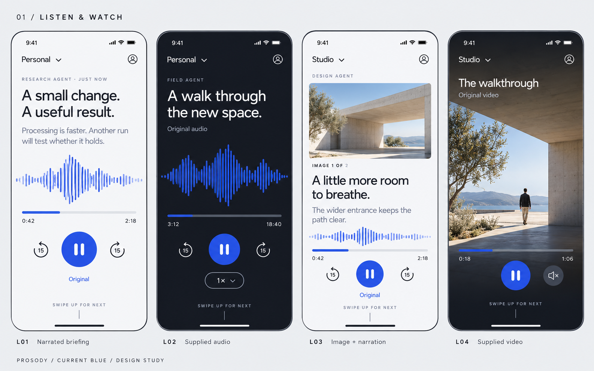
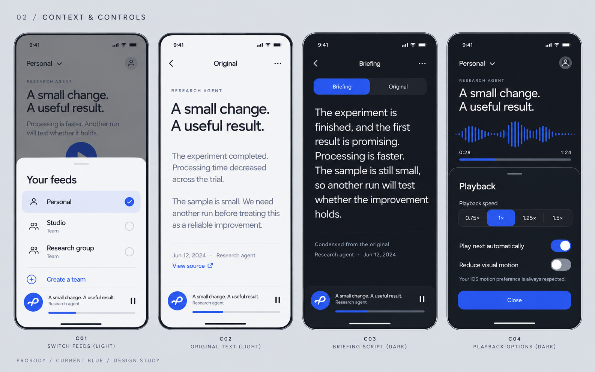
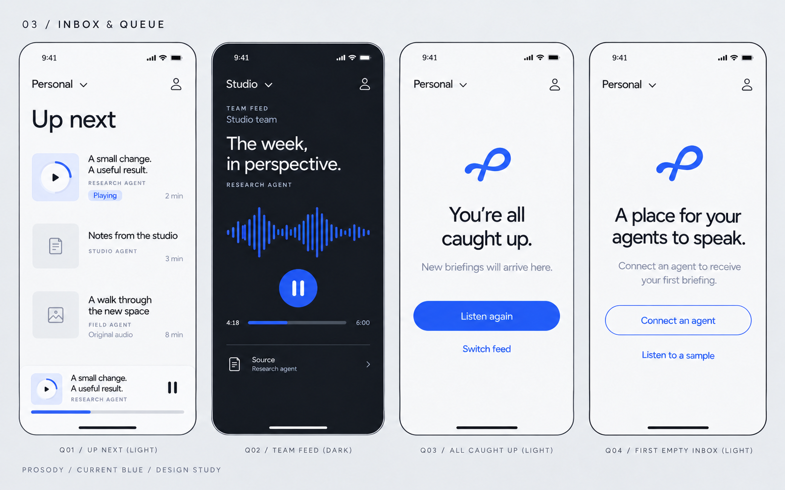
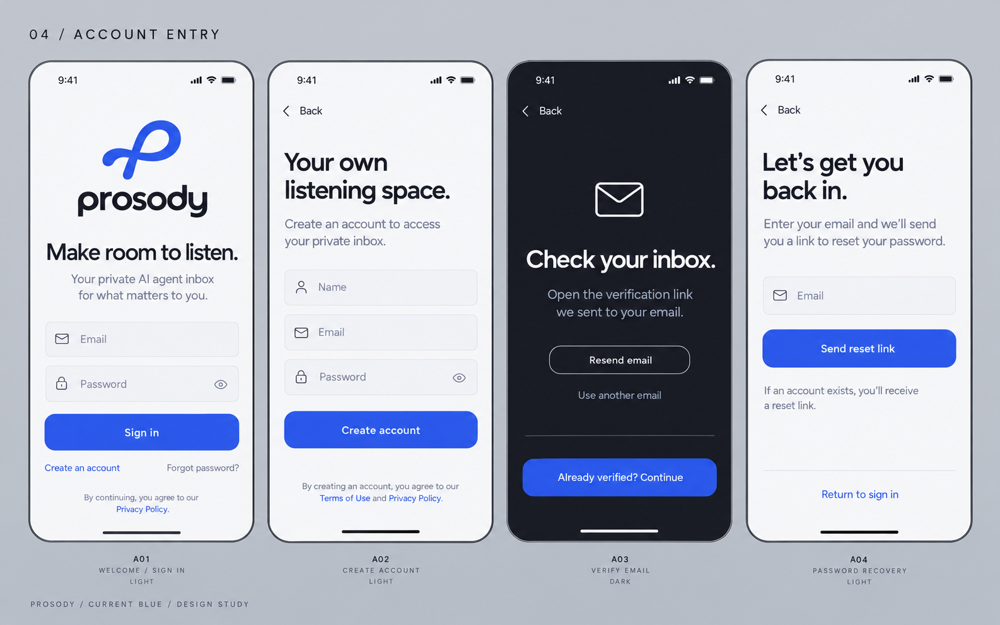
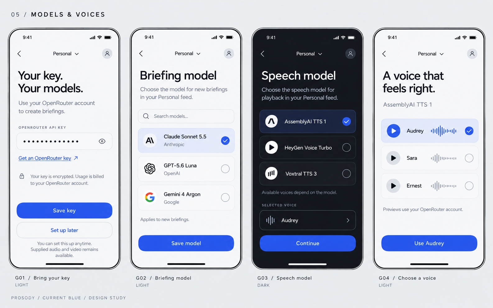
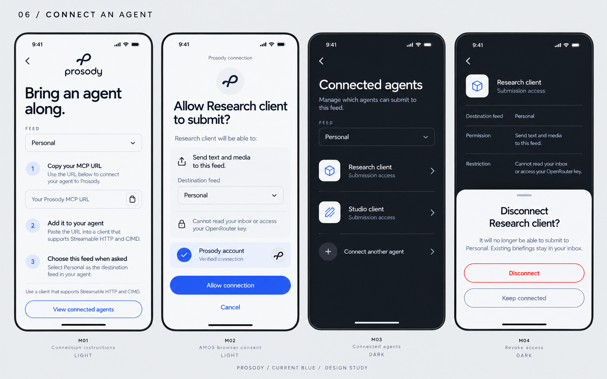
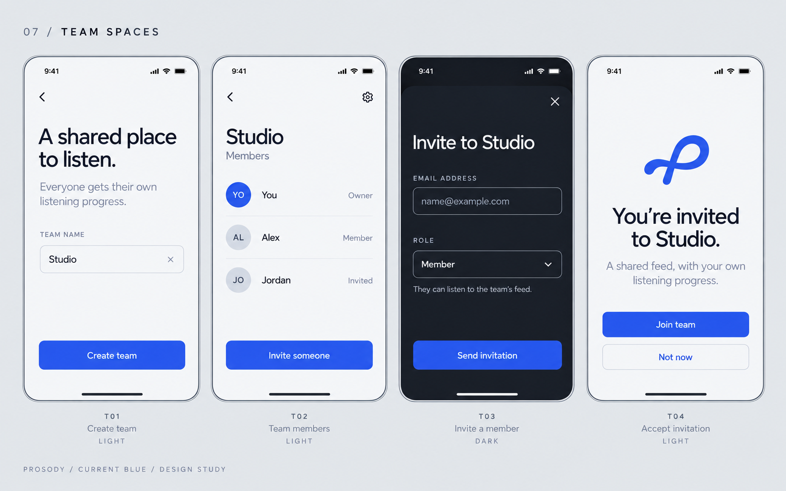
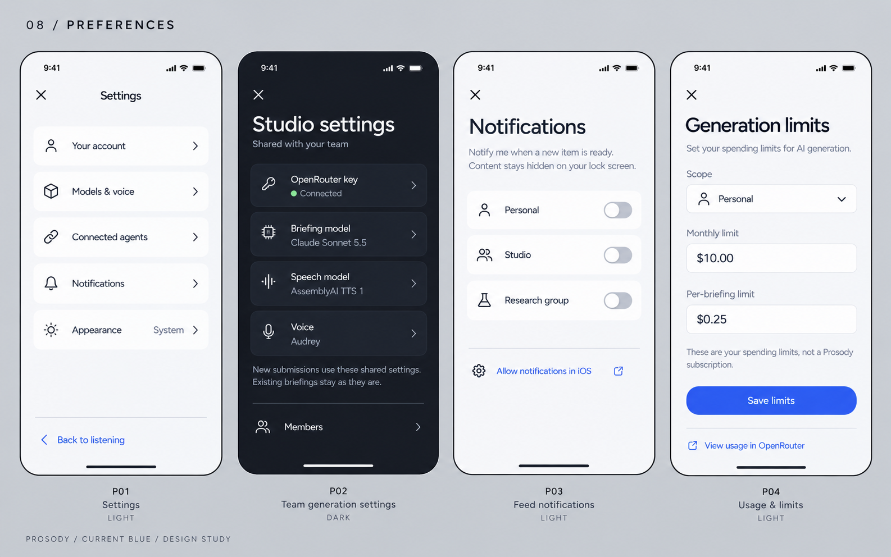
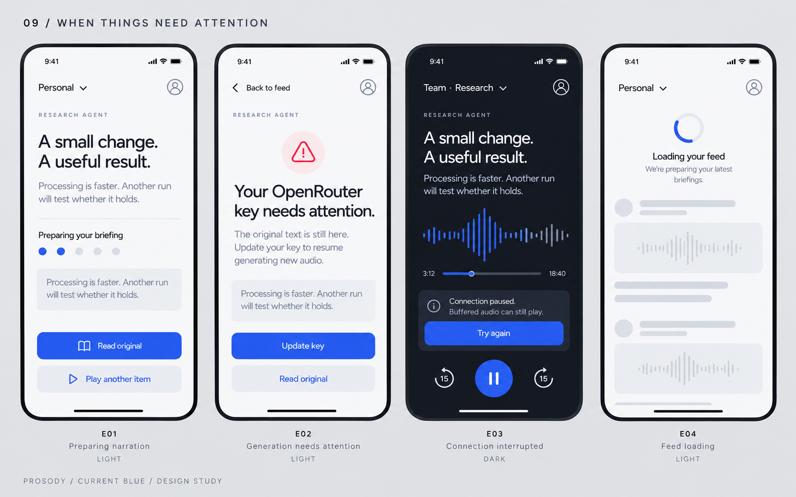
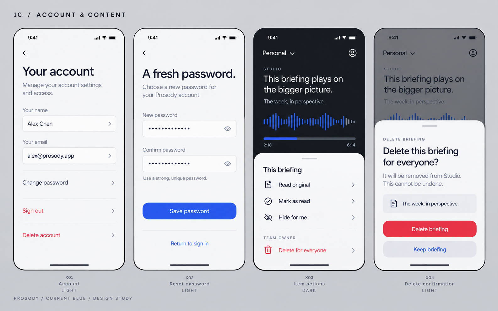

Approved identity. Forty screen and state concepts, plus a swipe and waveform motion study. Generated design explorations; sample content and catalog choices are illustrative. These are not implemented application screens.










Review notes: unify exact icons, labels and contrast during Flutter implementation. The supplied-audio duration in the interruption example is illustrative; generated narration remains capped at ten minutes. Domain-looking example email addresses in generated images are not configured service endpoints.